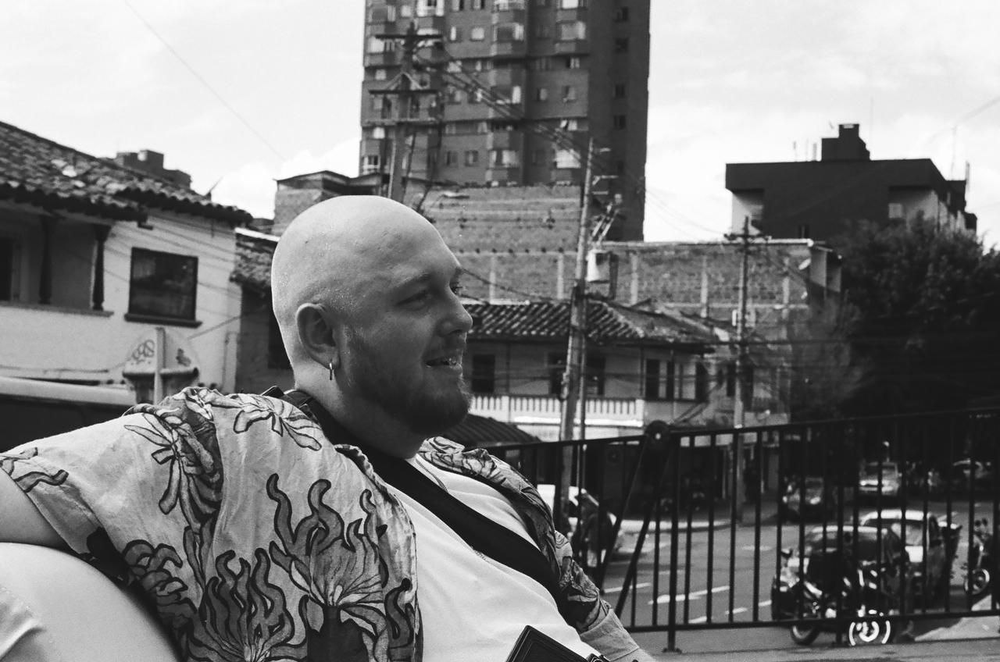

Medellín — film, hand-printed.
Guillaume Delye

I'm Guillaume Delye, a French photographer based in Medellín, Colombia. I shoot 35mm and medium format. Black and white is processed by hand; colour is scanned and printed on cotton rag.
The work asks the same three questions — how a place holds memory, how a body sits in light, how an image earns the right to exist. The series come slowly, and they stay.
Open to exhibitions, residencies, and acquisitions. Editorial and commercial commissions are handled on the commercial site.
Available for
- Solo and group exhibitions
- Residencies and assignments
- Acquisitions — institutional and private
Press & selected features
- For press, features and review copies — w2bphoto@gmail.com
Guillaume Delye